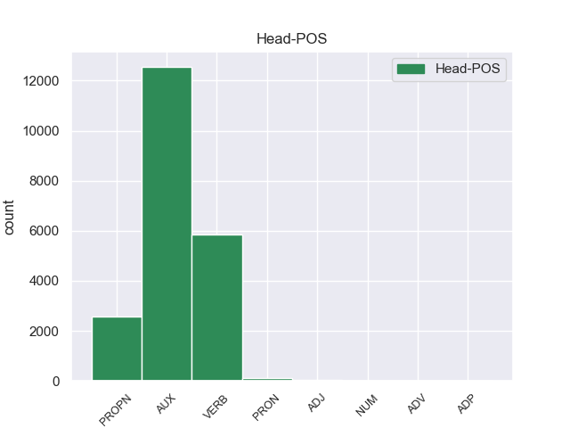
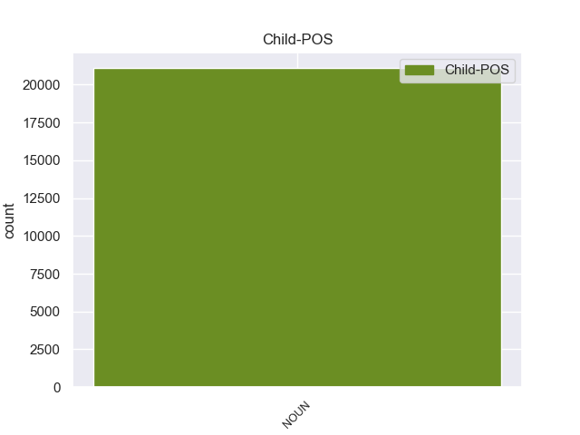

Distribution of features within this leaf



Agreement Rules sorted by frequency.
- When the dependent token is the nominal subject(nsubj) of the head token, and the head token is AUX and the dependent token is NOUN.
1 मैं _ _ _ _ 0 _ _ _
2 स्पष्ट _ _ _ _ 0 _ _ _
3 कर _ _ _ _ 0 _ _ _
4 देना _ _ _ _ 0 _ _ _
5 चाहता _ _ _ _ 0 _ _ _
6 हूं _ _ _ _ 0 _ _ _
7 कि _ _ _ _ 0 _ _ _
8 मेरा _ _ _ _ 0 _ _ _
9 दृष्टिकोण दृष्टिकोण NOUN -- Case=Nom|Gender=Masc|Number=Sing|Person=3 12 nsubj _ _
10 अलगाववादी _ _ _ _ 0 _ _ _
11 नहीं _ _ _ _ 0 _ _ _
12 है है AUX -- Mood=Ind|Number=Sing|Person=3|Tense=Pres|VerbForm=Fin|Voice=Act 0 _ _ _
13 । _ _ _ _ 0 _ _ _
1 ७० _ _ _ _ 0 _ _ _
2 वर्षीय _ _ _ _ 0 _ _ _
3 इस _ _ _ _ 0 _ _ _
4 अहिंसावादी _ _ _ _ 0 _ _ _
5 तिब्बती _ _ _ _ 0 _ _ _
6 नेता _ _ _ _ 0 _ _ _
7 ने _ _ _ _ 0 _ _ _
8 यह _ _ _ _ 0 _ _ _
9 भी _ _ _ _ 0 _ _ _
10 कहा _ _ _ _ 0 _ _ _
11 कि _ _ _ _ 0 _ _ _
12 वे _ _ _ _ 0 _ _ _
13 चीन _ _ _ _ 0 _ _ _
14 से _ _ _ _ 0 _ _ _
15 अलगाव _ _ _ _ 0 _ _ _
16 की _ _ _ _ 0 _ _ _
17 बात _ _ _ _ 0 _ _ _
18 नहीं _ _ _ _ 0 _ _ _
19 कर _ _ _ _ 0 _ _ _
20 रहे _ _ _ _ 0 _ _ _
21 हैं _ _ _ _ 0 _ _ _
22 बल्कि _ _ _ _ 0 _ _ _
23 वे _ _ _ _ 0 _ _ _
24 तो _ _ _ _ 0 _ _ _
25 चीनी _ _ _ _ 0 _ _ _
26 संविधान _ _ _ _ 0 _ _ _
27 के _ _ _ _ 0 _ _ _
28 दायरे _ _ _ _ 0 _ _ _
29 में _ _ _ _ 0 _ _ _
30 ही _ _ _ _ 0 _ _ _
31 तिब्बत _ _ _ _ 0 _ _ _
32 समस्या _ _ _ _ 0 _ _ _
33 का _ _ _ _ 0 _ _ _
34 हल हल NOUN -- Case=Nom|Gender=Masc|Number=Sing|Person=3 36 compound _ _
35 चाहते _ _ _ _ 0 _ _ _
36 हैं है AUX -- Mood=Ind|Number=Sing|Person=3|Polite=Form|Tense=Pres|VerbForm=Fin 0 _ _ _
37 । _ _ _ _ 0 _ _ _
1 उन्होंने _ _ _ _ 0 _ _ _
2 कहा _ _ _ _ 0 _ _ _
3 कि _ _ _ _ 0 _ _ _
4 चीन _ _ _ _ 0 _ _ _
5 तिब्बत _ _ _ _ 0 _ _ _
6 को _ _ _ _ 0 _ _ _
7 व्यापक _ _ _ _ 0 _ _ _
8 स्वायत्तता _ _ _ _ 0 _ _ _
9 देकर _ _ _ _ 0 _ _ _
10 इस _ _ _ _ 0 _ _ _
11 समस्या _ _ _ _ 0 _ _ _
12 के _ _ _ _ 0 _ _ _
13 समाधान _ _ _ _ 0 _ _ _
14 का _ _ _ _ 0 _ _ _
15 रास्ता रास्ता NOUN -- Case=Nom|Gender=Masc|Number=Sing|Person=3 18 obj _ _
16 साफ _ _ _ _ 0 _ _ _
17 कर _ _ _ _ 0 _ _ _
18 सकता सक AUX -- Aspect=Imp|Gender=Masc|Number=Sing|VerbForm=Part 0 _ _ _
19 है _ _ _ _ 0 _ _ _
20 । _ _ _ _ 0 _ _ _
1 दलाई _ _ _ _ 0 _ _ _
2 लामा _ _ _ _ 0 _ _ _
3 ने _ _ _ _ 0 _ _ _
4 भारत _ _ _ _ 0 _ _ _
5 और _ _ _ _ 0 _ _ _
6 चीन _ _ _ _ 0 _ _ _
7 के _ _ _ _ 0 _ _ _
8 रिश्ते _ _ _ _ 0 _ _ _
9 में _ _ _ _ 0 _ _ _
10 आ _ _ _ _ 0 _ _ _
11 रहे _ _ _ _ 0 _ _ _
12 सुधार _ _ _ _ 0 _ _ _
13 की _ _ _ _ 0 _ _ _
14 भी _ _ _ _ 0 _ _ _
15 प्रशंसा प्रशंसा NOUN -- Case=Nom|Gender=Fem|Number=Sing|Person=3 16 compound _ _
16 की कर VERB -- Aspect=Perf|Gender=Fem|Number=Sing|VerbForm=Part|Voice=Act 0 _ _ _
17 । _ _ _ _ 0 _ _ _
1 चीनी _ _ _ _ 0 _ _ _
2 प्रधानमंत्री _ _ _ _ 0 _ _ _
3 वेन _ _ _ _ 0 _ _ _
4 जियाबाओ _ _ _ _ 0 _ _ _
5 की _ _ _ _ 0 _ _ _
6 भारत _ _ _ _ 0 _ _ _
7 यात्रा _ _ _ _ 0 _ _ _
8 से _ _ _ _ 0 _ _ _
9 पहले _ _ _ _ 0 _ _ _
10 निर्वासित _ _ _ _ 0 _ _ _
11 तिब्बती _ _ _ _ 0 _ _ _
12 आध्यात्मिक _ _ _ _ 0 _ _ _
13 नेता नेता NOUN -- Case=Acc|Gender=Masc|Number=Sing|Person=3 15 nmod _ _
14 दलाई _ _ _ _ 0 _ _ _
15 लामा लामा PROPN -- Case=Acc|Gender=Masc|Number=Sing|Person=3 0 _ _ _
16 ने _ _ _ _ 0 _ _ _
17 कहा _ _ _ _ 0 _ _ _
18 है _ _ _ _ 0 _ _ _
19 कि _ _ _ _ 0 _ _ _
20 चीनी _ _ _ _ 0 _ _ _
21 और _ _ _ _ 0 _ _ _
22 तिब्बती _ _ _ _ 0 _ _ _
23 एक _ _ _ _ 0 _ _ _
24 - _ _ _ _ 0 _ _ _
25 दूसरे _ _ _ _ 0 _ _ _
26 की _ _ _ _ 0 _ _ _
27 सांस्कृतिक _ _ _ _ 0 _ _ _
28 विशिष्टता _ _ _ _ 0 _ _ _
29 का _ _ _ _ 0 _ _ _
30 आदर _ _ _ _ 0 _ _ _
31 करते _ _ _ _ 0 _ _ _
32 हैं _ _ _ _ 0 _ _ _
33 । _ _ _ _ 0 _ _ _
1 उन्होंने _ _ _ _ 0 _ _ _
2 कहा _ _ _ _ 0 _ _ _
3 कि _ _ _ _ 0 _ _ _
4 भारत _ _ _ _ 0 _ _ _
5 और _ _ _ _ 0 _ _ _
6 चीन _ _ _ _ 0 _ _ _
7 सर्वाधिक _ _ _ _ 0 _ _ _
8 आबादी _ _ _ _ 0 _ _ _
9 वाले _ _ _ _ 0 _ _ _
10 देश देश NOUN -- Case=Nom|Gender=Masc|Number=Plur|Person=3 11 PD _ _
11 हैं है AUX -- Mood=Ind|Number=Plur|Person=3|Tense=Pres|VerbForm=Fin|Voice=Act 0 _ _ _
12 । _ _ _ _ 0 _ _ _
1 इन _ _ _ _ 0 _ _ _
2 दोनों _ _ _ _ 0 _ _ _
3 देशों _ _ _ _ 0 _ _ _
4 के _ _ _ _ 0 _ _ _
5 बीच _ _ _ _ 0 _ _ _
6 रिश्ते _ _ _ _ 0 _ _ _
7 में _ _ _ _ 0 _ _ _
8 सुधार _ _ _ _ 0 _ _ _
9 से _ _ _ _ 0 _ _ _
10 करोड़ों _ _ _ _ 0 _ _ _
11 लोगों _ _ _ _ 0 _ _ _
12 का _ _ _ _ 0 _ _ _
13 भला भला NOUN -- Case=Nom|Gender=Masc|Number=Sing|Person=3 14 nsubj _ _
14 होगा हो VERB -- Gender=Masc|Mood=Ind|Number=Sing|Person=3|Tense=Fut|VerbForm=Fin|Voice=Act 0 _ _ _
15 । _ _ _ _ 0 _ _ _
1 उन्होंने _ _ _ _ 0 _ _ _
2 यहां _ _ _ _ 0 _ _ _
3 वेटिकन _ _ _ _ 0 _ _ _
4 दूतावास _ _ _ _ 0 _ _ _
5 में _ _ _ _ 0 _ _ _
6 एक _ _ _ _ 0 _ _ _
7 शोक _ _ _ _ 0 _ _ _
8 पुस्तिका _ _ _ _ 0 _ _ _
9 पर _ _ _ _ 0 _ _ _
10 हस्ताक्षर _ _ _ _ 0 _ _ _
11 कर _ _ _ _ 0 _ _ _
12 पोप _ _ _ _ 0 _ _ _
13 जॉन _ _ _ _ 0 _ _ _
14 पॉल _ _ _ _ 0 _ _ _
15 द्वितीय _ _ _ _ 0 _ _ _
16 के _ _ _ _ 0 _ _ _
17 निधन _ _ _ _ 0 _ _ _
18 पर _ _ _ _ 0 _ _ _
19 गहरा _ _ _ _ 0 _ _ _
20 दुख दुख NOUN -- Case=Nom|Gender=Masc|Number=Sing|Person=3 22 obj _ _
21 प्रकट _ _ _ _ 0 _ _ _
22 किया कर VERB -- Aspect=Perf|Gender=Masc|Number=Sing|VerbForm=Part|Voice=Act 0 _ _ _
23 । _ _ _ _ 0 _ _ _
1 पत्रिका _ _ _ _ 0 _ _ _
2 ने _ _ _ _ 0 _ _ _
3 सूत्रों _ _ _ _ 0 _ _ _
4 का _ _ _ _ 0 _ _ _
5 हवाला _ _ _ _ 0 _ _ _
6 देते _ _ _ _ 0 _ _ _
7 हुए _ _ _ _ 0 _ _ _
8 कहा _ _ _ _ 0 _ _ _
9 कि _ _ _ _ 0 _ _ _
10 पिछले _ _ _ _ 0 _ _ _
11 वर्ष वर्ष NOUN -- Case=Acc|Gender=Masc|Number=Sing|Person=3 31 obl _ _
12 दिसंबर _ _ _ _ 0 _ _ _
13 में _ _ _ _ 0 _ _ _
14 व्हाइट _ _ _ _ 0 _ _ _
15 हाउस _ _ _ _ 0 _ _ _
16 में _ _ _ _ 0 _ _ _
17 एक _ _ _ _ 0 _ _ _
18 बैठक _ _ _ _ 0 _ _ _
19 के _ _ _ _ 0 _ _ _
20 दौरान _ _ _ _ 0 _ _ _
21 राष्ट्रपति _ _ _ _ 0 _ _ _
22 जॉर्ज _ _ _ _ 0 _ _ _
23 बुश _ _ _ _ 0 _ _ _
24 ने _ _ _ _ 0 _ _ _
25 पाकिस्तानी _ _ _ _ 0 _ _ _
26 राष्ट्रपति _ _ _ _ 0 _ _ _
27 परवेज़ _ _ _ _ 0 _ _ _
28 मुशर्रफ _ _ _ _ 0 _ _ _
29 से _ _ _ _ 0 _ _ _
30 कहा _ _ _ _ 0 _ _ _
31 था था AUX -- Gender=Masc|Mood=Ind|Number=Sing|Tense=Past|VerbForm=Fin 0 _ _ _
32 कि _ _ _ _ 0 _ _ _
33 उनका _ _ _ _ 0 _ _ _
34 मानना _ _ _ _ 0 _ _ _
35 है _ _ _ _ 0 _ _ _
36 कि _ _ _ _ 0 _ _ _
37 खान _ _ _ _ 0 _ _ _
38 ने _ _ _ _ 0 _ _ _
39 अपने _ _ _ _ 0 _ _ _
40 सभी _ _ _ _ 0 _ _ _
41 घृणित _ _ _ _ 0 _ _ _
42 सौदों _ _ _ _ 0 _ _ _
43 को _ _ _ _ 0 _ _ _
44 स्वीकार _ _ _ _ 0 _ _ _
45 नहीं _ _ _ _ 0 _ _ _
46 किया _ _ _ _ 0 _ _ _
47 है _ _ _ _ 0 _ _ _
48 । _ _ _ _ 0 _ _ _
1 उन्होंने _ _ _ _ 0 _ _ _
2 यहां _ _ _ _ 0 _ _ _
3 वेटिकन _ _ _ _ 0 _ _ _
4 दूतावास _ _ _ _ 0 _ _ _
5 में _ _ _ _ 0 _ _ _
6 एक _ _ _ _ 0 _ _ _
7 शोक _ _ _ _ 0 _ _ _
8 पुस्तिका _ _ _ _ 0 _ _ _
9 पर _ _ _ _ 0 _ _ _
10 हस्ताक्षर _ _ _ _ 0 _ _ _
11 कर _ _ _ _ 0 _ _ _
12 पोप पोप NOUN -- Case=Nom|Gender=Masc|Number=Sing|Person=3 15 compound _ _
13 जॉन _ _ _ _ 0 _ _ _
14 पॉल _ _ _ _ 0 _ _ _
15 द्वितीय द्वितीय PROPN -- Case=Acc|Gender=Masc|Number=Sing|Person=3 0 _ _ _
16 के _ _ _ _ 0 _ _ _
17 निधन _ _ _ _ 0 _ _ _
18 पर _ _ _ _ 0 _ _ _
19 गहरा _ _ _ _ 0 _ _ _
20 दुख _ _ _ _ 0 _ _ _
21 प्रकट _ _ _ _ 0 _ _ _
22 किया _ _ _ _ 0 _ _ _
23 । _ _ _ _ 0 _ _ _
1 अपने _ _ _ _ 0 _ _ _
2 चार _ _ _ _ 0 _ _ _
3 - _ _ _ _ 0 _ _ _
4 दिवसीय _ _ _ _ 0 _ _ _
5 भारत _ _ _ _ 0 _ _ _
6 दौरे _ _ _ _ 0 _ _ _
7 के _ _ _ _ 0 _ _ _
8 दौरान _ _ _ _ 0 _ _ _
9 वे _ _ _ _ 0 _ _ _
10 भारतीय _ _ _ _ 0 _ _ _
11 नेताओं _ _ _ _ 0 _ _ _
12 से _ _ _ _ 0 _ _ _
13 सीमा _ _ _ _ 0 _ _ _
14 विवाद विवाद NOUN -- Case=Acc|Gender=Masc|Number=Sing|Person=3 21 obl _ _
15 और _ _ _ _ 0 _ _ _
16 अन्य _ _ _ _ 0 _ _ _
17 द्विपक्षीय _ _ _ _ 0 _ _ _
18 मसलों _ _ _ _ 0 _ _ _
19 पर _ _ _ _ 0 _ _ _
20 बातचीत _ _ _ _ 0 _ _ _
21 करेंगे कर VERB -- Gender=Masc|Mood=Ind|Number=Sing|Person=3|Polite=Form|Tense=Fut|VerbForm=Fin|Voice=Act 0 _ _ _
22 । _ _ _ _ 0 _ _ _
1 उन्होंने _ _ _ _ 0 _ _ _
2 कहा _ _ _ _ 0 _ _ _
3 कि _ _ _ _ 0 _ _ _
4 कपास _ _ _ _ 0 _ _ _
5 उत्पादन _ _ _ _ 0 _ _ _
6 बढ़ाकर _ _ _ _ 0 _ _ _
7 भारत _ _ _ _ 0 _ _ _
8 दुनिया _ _ _ _ 0 _ _ _
9 के _ _ _ _ 0 _ _ _
10 कपड़ा _ _ _ _ 0 _ _ _
11 कारोबार _ _ _ _ 0 _ _ _
12 में _ _ _ _ 0 _ _ _
13 अपनी _ _ _ _ 0 _ _ _
14 हिस्सेदारी _ _ _ _ 0 _ _ _
15 12 _ _ _ _ 0 _ _ _
16 से _ _ _ _ 0 _ _ _
17 बढ़ाकर _ _ _ _ 0 _ _ _
18 25 _ _ _ _ 0 _ _ _
19 फीसदी फीसदी NOUN -- Case=Nom|Gender=Fem|Number=Sing|Person=3 21 acl _ _
20 कर _ _ _ _ 0 _ _ _
21 सकता सक AUX -- Aspect=Imp|Gender=Masc|Number=Sing|VerbForm=Part 0 _ _ _
22 है _ _ _ _ 0 _ _ _
23 । _ _ _ _ 0 _ _ _
1 दार्लंग _ _ _ _ 0 _ _ _
2 , _ _ _ _ 0 _ _ _
3 लद्दाख _ _ _ _ 0 _ _ _
4 और _ _ _ _ 0 _ _ _
5 सिक्किम _ _ _ _ 0 _ _ _
6 जैसे _ _ _ _ 0 _ _ _
7 पहाड़ी _ _ _ _ 0 _ _ _
8 इलाके इलाका NOUN -- Case=Nom|Gender=Masc|Number=Plur|Person=3 19 nmod _ _
9 जहां _ _ _ _ 0 _ _ _
10 पहले _ _ _ _ 0 _ _ _
11 से _ _ _ _ 0 _ _ _
12 बौद्ध _ _ _ _ 0 _ _ _
13 धर्म _ _ _ _ 0 _ _ _
14 के _ _ _ _ 0 _ _ _
15 अनुयायी _ _ _ _ 0 _ _ _
16 बड़ी _ _ _ _ 0 _ _ _
17 जनसंख्या _ _ _ _ 0 _ _ _
18 में _ _ _ _ 0 _ _ _
19 हैं है AUX -- Mood=Ind|Number=Plur|Person=3|Tense=Pres|VerbForm=Fin|Voice=Act 0 _ _ _
20 वहाँ _ _ _ _ 0 _ _ _
21 आबादी _ _ _ _ 0 _ _ _
22 नहीं _ _ _ _ 0 _ _ _
23 बढ़ी _ _ _ _ 0 _ _ _
24 । _ _ _ _ 0 _ _ _
1 पासवान _ _ _ _ 0 _ _ _
2 ने _ _ _ _ 0 _ _ _
3 बृहस्पतिवार _ _ _ _ 0 _ _ _
4 को _ _ _ _ 0 _ _ _
5 उनके _ _ _ _ 0 _ _ _
6 कमांडो _ _ _ _ 0 _ _ _
7 वापस _ _ _ _ 0 _ _ _
8 लेने _ _ _ _ 0 _ _ _
9 के _ _ _ _ 0 _ _ _
10 राज्य _ _ _ _ 0 _ _ _
11 प्रशासन _ _ _ _ 0 _ _ _
12 के _ _ _ _ 0 _ _ _
13 प्रस्ताव _ _ _ _ 0 _ _ _
14 पर _ _ _ _ 0 _ _ _
15 कड़ी _ _ _ _ 0 _ _ _
16 नाराजगी नाराजगी NOUN -- Case=Nom|Gender=Fem|Number=Sing|Person=3 18 xcomp _ _
17 जताई _ _ _ _ 0 _ _ _
18 थी था AUX -- Gender=Fem|Mood=Ind|Number=Sing|Tense=Past|VerbForm=Fin 0 _ _ _
19 और _ _ _ _ 0 _ _ _
20 चुनावों _ _ _ _ 0 _ _ _
21 में _ _ _ _ 0 _ _ _
22 डीजीपी _ _ _ _ 0 _ _ _
23 की _ _ _ _ 0 _ _ _
24 भूमिका _ _ _ _ 0 _ _ _
25 संदिग्ध _ _ _ _ 0 _ _ _
26 होने _ _ _ _ 0 _ _ _
27 का _ _ _ _ 0 _ _ _
28 आरोप _ _ _ _ 0 _ _ _
29 लगाया _ _ _ _ 0 _ _ _
30 था _ _ _ _ 0 _ _ _
31 । _ _ _ _ 0 _ _ _
1 सामान्य _ _ _ _ 0 _ _ _
2 शयनयान _ _ _ _ 0 _ _ _
3 श्रेणी _ _ _ _ 0 _ _ _
4 के _ _ _ _ 0 _ _ _
5 डिब्बों _ _ _ _ 0 _ _ _
6 वाली _ _ _ _ 0 _ _ _
7 यह _ _ _ _ 0 _ _ _
8 टूरिस्ट _ _ _ _ 0 _ _ _
9 स्पेशल _ _ _ _ 0 _ _ _
10 ट्रेन ट्रेन NOUN -- Case=Nom|Gender=Fem|Number=Sing|Person=3 20 nsubj:pass _ _
11 ' _ _ _ _ 0 _ _ _
12 पैलेस _ _ _ _ 0 _ _ _
13 ऑन _ _ _ _ 0 _ _ _
14 व्हील्स _ _ _ _ 0 _ _ _
15 ' _ _ _ _ 0 _ _ _
16 की _ _ _ _ 0 _ _ _
17 तरह _ _ _ _ 0 _ _ _
18 ही _ _ _ _ 0 _ _ _
19 चलाई _ _ _ _ 0 _ _ _
20 जाएगी जा AUX -- Gender=Fem|Mood=Ind|Number=Sing|Person=3|Tense=Fut|VerbForm=Fin 0 _ _ _
21 । _ _ _ _ 0 _ _ _
1 कांग्रेस _ _ _ _ 0 _ _ _
2 ने _ _ _ _ 0 _ _ _
3 गांधी _ _ _ _ 0 _ _ _
4 के _ _ _ _ 0 _ _ _
5 साथ _ _ _ _ 0 _ _ _
6 अपने _ _ _ _ 0 _ _ _
7 रिश्ते _ _ _ _ 0 _ _ _
8 को _ _ _ _ 0 _ _ _
9 मजबूत _ _ _ _ 0 _ _ _
10 करने _ _ _ _ 0 _ _ _
11 में _ _ _ _ 0 _ _ _
12 कोई कोई PRON -- Case=Nom|Number=Sing|Person=3|PronType=Prs 0 _ _ _
13 कसर कसर NOUN -- Case=Nom|Gender=Fem|Number=Sing|Person=3 12 MARK _ _
14 नहीं _ _ _ _ 0 _ _ _
15 छोड़ी _ _ _ _ 0 _ _ _
16 । _ _ _ _ 0 _ _ _
1 वोल्कर _ _ _ _ 0 _ _ _
2 से _ _ _ _ 0 _ _ _
3 यह _ _ _ _ 0 _ _ _
4 बातचीत _ _ _ _ 0 _ _ _
5 पिछले _ _ _ _ 0 _ _ _
6 बृहस्पतिवार _ _ _ _ 0 _ _ _
7 को _ _ _ _ 0 _ _ _
8 की _ _ _ _ 0 _ _ _
9 गई _ _ _ _ 0 _ _ _
10 थी _ _ _ _ 0 _ _ _
11 , _ _ _ _ 0 _ _ _
12 जिस _ _ _ _ 0 _ _ _
13 दिन _ _ _ _ 0 _ _ _
14 भारत _ _ _ _ 0 _ _ _
15 के _ _ _ _ 0 _ _ _
16 विदेश _ _ _ _ 0 _ _ _
17 मंत्री _ _ _ _ 0 _ _ _
18 नटवर _ _ _ _ 0 _ _ _
19 सिंह सिंह PROPN -- Case=Acc|Gender=Masc|Number=Sing|Person=3 0 _ _ _
20 और _ _ _ _ 0 _ _ _
21 कांग्रेस _ _ _ _ 0 _ _ _
22 पार्टी पार्टी NOUN -- Case=Acc|Gender=Fem|Number=Sing|Person=3 19 conj _ _
23 का _ _ _ _ 0 _ _ _
24 नाम _ _ _ _ 0 _ _ _
25 आया _ _ _ _ 0 _ _ _
26 था _ _ _ _ 0 _ _ _
27 । _ _ _ _ 0 _ _ _
1 डॉट _ _ _ _ 0 _ _ _
2 ओआरजी _ _ _ _ 0 _ _ _
3 नाम _ _ _ _ 0 _ _ _
4 वाली _ _ _ _ 0 _ _ _
5 वेबसाइटों _ _ _ _ 0 _ _ _
6 का _ _ _ _ 0 _ _ _
7 रजिस्ट्रेशन _ _ _ _ 0 _ _ _
8 करने _ _ _ _ 0 _ _ _
9 वाली _ _ _ _ 0 _ _ _
10 अंतर्राष्ट्रीय _ _ _ _ 0 _ _ _
11 संस्था _ _ _ _ 0 _ _ _
12 ' _ _ _ _ 0 _ _ _
13 पब्लिक _ _ _ _ 0 _ _ _
14 इंट्रेस्ट _ _ _ _ 0 _ _ _
15 रजिस्ट्री _ _ _ _ 0 _ _ _
16 ' _ _ _ _ 0 _ _ _
17 ( _ _ _ _ 0 _ _ _
18 पीआईआर _ _ _ _ 0 _ _ _
19 ) _ _ _ _ 0 _ _ _
20 ने _ _ _ _ 0 _ _ _
21 तय _ _ _ _ 0 _ _ _
22 किया _ _ _ _ 0 _ _ _
23 है _ _ _ _ 0 _ _ _
24 कि _ _ _ _ 0 _ _ _
25 अब _ _ _ _ 0 _ _ _
26 भारत _ _ _ _ 0 _ _ _
27 ही _ _ _ _ 0 _ _ _
28 उसकी _ _ _ _ 0 _ _ _
29 गतिविधियों _ _ _ _ 0 _ _ _
30 का _ _ _ _ 0 _ _ _
31 मुख्य _ _ _ _ 0 _ _ _
32 अड्डा अड्डा NOUN -- Case=Nom|Gender=Masc|Number=Sing|Person=3 33 xcomp _ _
33 होगा हो VERB -- Gender=Masc|Mood=Ind|Number=Sing|Person=3|Tense=Fut|VerbForm=Fin|Voice=Act 0 _ _ _
34 । _ _ _ _ 0 _ _ _
1 ग्रामीण _ _ _ _ 0 _ _ _
2 ज्ञान _ _ _ _ 0 _ _ _
3 केंद्र _ _ _ _ 0 _ _ _
4 को _ _ _ _ 0 _ _ _
5 उन्होंने _ _ _ _ 0 _ _ _
6 रोजगार _ _ _ _ 0 _ _ _
7 का _ _ _ _ 0 _ _ _
8 एक _ _ _ _ 0 _ _ _
9 अन्य _ _ _ _ 0 _ _ _
10 स्त्रोत स्त्रोत NOUN -- Case=Nom|Gender=Masc|Number=Sing|Person=3 11 acl _ _
11 बताया बता VERB -- Aspect=Perf|Gender=Masc|Number=Sing|VerbForm=Part|Voice=Act 0 _ _ _
12 । _ _ _ _ 0 _ _ _
1 अधिकारियों _ _ _ _ 0 _ _ _
2 ने _ _ _ _ 0 _ _ _
3 बताया _ _ _ _ 0 _ _ _
4 कि _ _ _ _ 0 _ _ _
5 २,६०० _ _ _ _ 0 _ _ _
6 किमी किमी NOUN -- Case=Nom|Gender=Masc|Number=Sing|Person=3 7 obl _ _
7 लंबी लंबा ADJ -- Case=Acc|Gender=Fem|Number=Sing 0 _ _ _
8 पाइपलाइन _ _ _ _ 0 _ _ _
9 के _ _ _ _ 0 _ _ _
10 जरिए _ _ _ _ 0 _ _ _
11 गैस _ _ _ _ 0 _ _ _
12 की _ _ _ _ 0 _ _ _
13 आपूर्ति _ _ _ _ 0 _ _ _
14 वर्ष _ _ _ _ 0 _ _ _
15 २०१० _ _ _ _ 0 _ _ _
16 तक _ _ _ _ 0 _ _ _
17 शुरू _ _ _ _ 0 _ _ _
18 करने _ _ _ _ 0 _ _ _
19 का _ _ _ _ 0 _ _ _
20 लक्ष्य _ _ _ _ 0 _ _ _
21 निर्धारित _ _ _ _ 0 _ _ _
22 किया _ _ _ _ 0 _ _ _
23 गया _ _ _ _ 0 _ _ _
24 है _ _ _ _ 0 _ _ _
25 । _ _ _ _ 0 _ _ _
1 इसका _ _ _ _ 0 _ _ _
2 आधार _ _ _ _ 0 _ _ _
3 प्लेट _ _ _ _ 0 _ _ _
4 क्लोजर _ _ _ _ 0 _ _ _
5 वेक्टर _ _ _ _ 0 _ _ _
6 और _ _ _ _ 0 _ _ _
7 जीपीएस _ _ _ _ 0 _ _ _
8 कंवजेस _ _ _ _ 0 _ _ _
9 दर दर NOUN -- Case=Nom|Gender=Fem|Number=Sing|Person=3 10 conj _ _
10 है है AUX -- Mood=Ind|Number=Sing|Person=3|Tense=Pres|VerbForm=Fin|Voice=Act 0 _ _ _
11 । _ _ _ _ 0 _ _ _
1 केंद्र _ _ _ _ 0 _ _ _
2 में _ _ _ _ 0 _ _ _
3 एनडीए _ _ _ _ 0 _ _ _
4 की _ _ _ _ 0 _ _ _
5 वाजपेयी _ _ _ _ 0 _ _ _
6 सरकार _ _ _ _ 0 _ _ _
7 द्वारा _ _ _ _ 0 _ _ _
8 दिल्ली _ _ _ _ 0 _ _ _
9 को _ _ _ _ 0 _ _ _
10 पूर्ण _ _ _ _ 0 _ _ _
11 राज्य _ _ _ _ 0 _ _ _
12 का _ _ _ _ 0 _ _ _
13 दर्जा _ _ _ _ 0 _ _ _
14 देने _ _ _ _ 0 _ _ _
15 संबधी _ _ _ _ 0 _ _ _
16 बिल बिल NOUN -- Case=Nom|Gender=Masc|Number=Sing|Person=3 17 nmod _ _
17 जो जो PRON -- Case=Nom|Number=Sing|Person=3|PronType=Prs 0 _ _ _
18 संसद _ _ _ _ 0 _ _ _
19 में _ _ _ _ 0 _ _ _
20 पेश _ _ _ _ 0 _ _ _
21 हुआ _ _ _ _ 0 _ _ _
22 है _ _ _ _ 0 _ _ _
23 , _ _ _ _ 0 _ _ _
24 उसे _ _ _ _ 0 _ _ _
25 स्वीकृति _ _ _ _ 0 _ _ _
26 मिलनी _ _ _ _ 0 _ _ _
27 चाहिए _ _ _ _ 0 _ _ _
28 । _ _ _ _ 0 _ _ _
1 घायल _ _ _ _ 0 _ _ _
2 मजदूर मजदूर NOUN -- Case=Nom|Gender=Masc|Number=Plur|Person=3 9 iobj _ _
3 अग्रिम _ _ _ _ 0 _ _ _
4 के _ _ _ _ 0 _ _ _
5 साथ _ _ _ _ 0 _ _ _
6 छुट्टी _ _ _ _ 0 _ _ _
7 भी _ _ _ _ 0 _ _ _
8 ले _ _ _ _ 0 _ _ _
9 सकेंगे सक AUX -- Gender=Masc|Mood=Ind|Number=Plur|Person=3|Tense=Fut|VerbForm=Fin 0 _ _ _
10 । _ _ _ _ 0 _ _ _
1 उस _ _ _ _ 0 _ _ _
2 पत्रिका _ _ _ _ 0 _ _ _
3 के _ _ _ _ 0 _ _ _
4 पत्रकार _ _ _ _ 0 _ _ _
5 ने _ _ _ _ 0 _ _ _
6 जो _ _ _ _ 0 _ _ _
7 वादा _ _ _ _ 0 _ _ _
8 किया _ _ _ _ 0 _ _ _
9 था _ _ _ _ 0 _ _ _
10 , _ _ _ _ 0 _ _ _
11 उसे _ _ _ _ 0 _ _ _
12 उसने वह PRON -- Case=Acc,Erg|Number=Sing|Person=3|PronType=Prs 0 _ _ _
13 और _ _ _ _ 0 _ _ _
14 उसके _ _ _ _ 0 _ _ _
15 समूह समूह NOUN -- Case=Acc|Gender=Masc|Number=Sing|Person=3 12 conj _ _
16 ने _ _ _ _ 0 _ _ _
17 तोड़ा _ _ _ _ 0 _ _ _
18 है _ _ _ _ 0 _ _ _
19 । _ _ _ _ 0 _ _ _
1 लेकिन _ _ _ _ 0 _ _ _
2 नारो _ _ _ _ 0 _ _ _
3 तीन _ _ _ _ 0 _ _ _
4 माह माह NOUN -- Case=Nom|Gender=Masc|Number=Sing|Person=3 5 nmod _ _
5 पहले पहले ADV -- AdpType=Post|Case=Nom|Gender=Masc|Number=Sing|Person=3 0 _ _ _
6 भाल _ _ _ _ 0 _ _ _
7 सिंह _ _ _ _ 0 _ _ _
8 के _ _ _ _ 0 _ _ _
9 साथ _ _ _ _ 0 _ _ _
10 घर _ _ _ _ 0 _ _ _
11 से _ _ _ _ 0 _ _ _
12 भाग _ _ _ _ 0 _ _ _
13 गई _ _ _ _ 0 _ _ _
14 थी _ _ _ _ 0 _ _ _
15 । _ _ _ _ 0 _ _ _
1 दूसरी _ _ _ _ 0 _ _ _
2 ओर _ _ _ _ 0 _ _ _
3 लालू _ _ _ _ 0 _ _ _
4 ने _ _ _ _ 0 _ _ _
5 पासवान _ _ _ _ 0 _ _ _
6 पर _ _ _ _ 0 _ _ _
7 माफिया माफिया NOUN -- Case=Acc|Gender=Masc|Number=Sing|Person=3 14 iobj _ _
8 , _ _ _ _ 0 _ _ _
9 अपराधियों _ _ _ _ 0 _ _ _
10 व _ _ _ _ 0 _ _ _
11 अंडरवर्ल्ड _ _ _ _ 0 _ _ _
12 को _ _ _ _ 0 _ _ _
13 संरक्षण _ _ _ _ 0 _ _ _
14 देने दे VERB -- Case=Acc|Number=Sing|VerbForm=Inf 0 _ _ _
15 का _ _ _ _ 0 _ _ _
16 आरोप _ _ _ _ 0 _ _ _
17 लगाया _ _ _ _ 0 _ _ _
18 है _ _ _ _ 0 _ _ _
19 । _ _ _ _ 0 _ _ _
1 हालांकि _ _ _ _ 0 _ _ _
2 हुर्रियत _ _ _ _ 0 _ _ _
3 के _ _ _ _ 0 _ _ _
4 चेयरमैन चेयरमैन NOUN -- Case=Acc|Gender=Masc|Number=Sing|Person=3 7 nsubj _ _
5 मीरवाइज _ _ _ _ 0 _ _ _
6 उमर _ _ _ _ 0 _ _ _
7 फारूख फारूख PROPN -- Case=Acc|Gender=Masc|Number=Sing|Person=3 0 _ _ _
8 ने _ _ _ _ 0 _ _ _
9 कहा _ _ _ _ 0 _ _ _
10 है _ _ _ _ 0 _ _ _
11 कि _ _ _ _ 0 _ _ _
12 हम _ _ _ _ 0 _ _ _
13 जल्दी _ _ _ _ 0 _ _ _
14 ही _ _ _ _ 0 _ _ _
15 मतभेद _ _ _ _ 0 _ _ _
16 दूर _ _ _ _ 0 _ _ _
17 करने _ _ _ _ 0 _ _ _
18 की _ _ _ _ 0 _ _ _
19 कोशिश _ _ _ _ 0 _ _ _
20 करेंगे _ _ _ _ 0 _ _ _
21 । _ _ _ _ 0 _ _ _
1 इसके यह PRON -- Case=Acc,Gen|Gender=Masc|Number=Sing|Person=3|Poss=Yes|PronType=Prs 0 _ _ _
2 साथ _ _ _ _ 0 _ _ _
3 - _ _ _ _ 0 _ _ _
4 साथ साथ NOUN -- AdpType=Post|Case=Nom|Echo=Rdp|Gender=Masc|Number=Sing|Person=3 1 compound _ _
5 पहले _ _ _ _ 0 _ _ _
6 की _ _ _ _ 0 _ _ _
7 तरह _ _ _ _ 0 _ _ _
8 कांग्रेस _ _ _ _ 0 _ _ _
9 भी _ _ _ _ 0 _ _ _
10 लोजपा _ _ _ _ 0 _ _ _
11 के _ _ _ _ 0 _ _ _
12 साथ _ _ _ _ 0 _ _ _
13 कोई _ _ _ _ 0 _ _ _
14 नरमी _ _ _ _ 0 _ _ _
15 बरतने _ _ _ _ 0 _ _ _
16 के _ _ _ _ 0 _ _ _
17 लिए _ _ _ _ 0 _ _ _
18 भी _ _ _ _ 0 _ _ _
19 तैयार _ _ _ _ 0 _ _ _
20 नहीं _ _ _ _ 0 _ _ _
21 है _ _ _ _ 0 _ _ _
22 । _ _ _ _ 0 _ _ _
1 शर्मा _ _ _ _ 0 _ _ _
2 इन _ _ _ _ 0 _ _ _
3 दिनों _ _ _ _ 0 _ _ _
4 पुलिस _ _ _ _ 0 _ _ _
5 से _ _ _ _ 0 _ _ _
6 नजरें _ _ _ _ 0 _ _ _
7 बचाकर _ _ _ _ 0 _ _ _
8 गुड़गांव _ _ _ _ 0 _ _ _
9 व _ _ _ _ 0 _ _ _
10 आस आस NOUN -- AdpType=Post|Case=Nom|Gender=Masc|Number=Sing|Person=3 12 cc _ _
11 - _ _ _ _ 0 _ _ _
12 पास पास ADV -- AdpType=Post|Case=Acc|Gender=Masc|Number=Sing|Person=3 0 _ _ _
13 के _ _ _ _ 0 _ _ _
14 इलाकों _ _ _ _ 0 _ _ _
15 में _ _ _ _ 0 _ _ _
16 प्रॉपर्टी _ _ _ _ 0 _ _ _
17 का _ _ _ _ 0 _ _ _
18 धंधा _ _ _ _ 0 _ _ _
19 कर _ _ _ _ 0 _ _ _
20 रहा _ _ _ _ 0 _ _ _
21 था _ _ _ _ 0 _ _ _
22 । _ _ _ _ 0 _ _ _
1 संयुक्त _ _ _ _ 0 _ _ _
2 राष्ट्र _ _ _ _ 0 _ _ _
3 सेमिनार _ _ _ _ 0 _ _ _
4 में _ _ _ _ 0 _ _ _
5 हिस्सा _ _ _ _ 0 _ _ _
6 लेकर _ _ _ _ 0 _ _ _
7 वे _ _ _ _ 0 _ _ _
8 बिहार _ _ _ _ 0 _ _ _
9 की _ _ _ _ 0 _ _ _
10 पहली पहला ADJ -- Case=Nom|Gender=Fem|Number=Sing|NumType=Ord 0 _ _ _
11 और _ _ _ _ 0 _ _ _
12 देश _ _ _ _ 0 _ _ _
13 की _ _ _ _ 0 _ _ _
14 पांचवीं _ _ _ _ 0 _ _ _
15 ग्रामीण _ _ _ _ 0 _ _ _
16 महिला महिला NOUN -- Case=Nom|Gender=Fem|Number=Sing|Person=3 10 conj _ _
17 बन _ _ _ _ 0 _ _ _
18 जाती _ _ _ _ 0 _ _ _
19 । _ _ _ _ 0 _ _ _
1 रजत _ _ _ _ 0 _ _ _
2 जयंती _ _ _ _ 0 _ _ _
3 मनाने मना VERB -- Case=Acc|Number=Sing|VerbForm=Inf 0 _ _ _
4 वाले _ _ _ _ 0 _ _ _
5 और _ _ _ _ 0 _ _ _
6 राजनीतिक _ _ _ _ 0 _ _ _
7 प्रस्ताव प्रस्ताव NOUN -- Case=Acc|Gender=Masc|Number=Sing|Person=3 3 conj _ _
8 में _ _ _ _ 0 _ _ _
9 इस _ _ _ _ 0 _ _ _
10 बात _ _ _ _ 0 _ _ _
11 का _ _ _ _ 0 _ _ _
12 कोई _ _ _ _ 0 _ _ _
13 जिक्र _ _ _ _ 0 _ _ _
14 नहीं _ _ _ _ 0 _ _ _
15 है _ _ _ _ 0 _ _ _
16 कि _ _ _ _ 0 _ _ _
17 पार्टी _ _ _ _ 0 _ _ _
18 ने _ _ _ _ 0 _ _ _
19 पच्चीस _ _ _ _ 0 _ _ _
20 साल _ _ _ _ 0 _ _ _
21 पहले _ _ _ _ 0 _ _ _
22 जिस _ _ _ _ 0 _ _ _
23 रास्ते _ _ _ _ 0 _ _ _
24 पर _ _ _ _ 0 _ _ _
25 चलने _ _ _ _ 0 _ _ _
26 का _ _ _ _ 0 _ _ _
27 संकल्प _ _ _ _ 0 _ _ _
28 लिया _ _ _ _ 0 _ _ _
29 था _ _ _ _ 0 _ _ _
30 , _ _ _ _ 0 _ _ _
31 वह _ _ _ _ 0 _ _ _
32 रास्ता _ _ _ _ 0 _ _ _
33 क्या _ _ _ _ 0 _ _ _
34 वही _ _ _ _ 0 _ _ _
35 है _ _ _ _ 0 _ _ _
36 जिस _ _ _ _ 0 _ _ _
37 पर _ _ _ _ 0 _ _ _
38 वह _ _ _ _ 0 _ _ _
39 आज _ _ _ _ 0 _ _ _
40 खड़ी _ _ _ _ 0 _ _ _
41 है _ _ _ _ 0 _ _ _
42 । _ _ _ _ 0 _ _ _
1 पहले पहला NOUN -- AdpType=Post|Case=Nom|Gender=Masc|Number=Sing|Person=3 2 punct _ _
2 पहल पहल ADV -- AdpType=Post|Case=Nom|Gender=Fem|Number=Sing|Person=3 0 _ _ _
3 यह _ _ _ _ 0 _ _ _
4 एक _ _ _ _ 0 _ _ _
5 फ्रेंच _ _ _ _ 0 _ _ _
6 महल _ _ _ _ 0 _ _ _
7 था _ _ _ _ 0 _ _ _
8 जिसे _ _ _ _ 0 _ _ _
9 बाद _ _ _ _ 0 _ _ _
10 में _ _ _ _ 0 _ _ _
11 म्यूजियम _ _ _ _ 0 _ _ _
12 का _ _ _ _ 0 _ _ _
13 रूप _ _ _ _ 0 _ _ _
14 दे _ _ _ _ 0 _ _ _
15 दिया _ _ _ _ 0 _ _ _
16 गया _ _ _ _ 0 _ _ _
17 था _ _ _ _ 0 _ _ _
18 । _ _ _ _ 0 _ _ _
1 आप _ _ _ _ 0 _ _ _
2 इस _ _ _ _ 0 _ _ _
3 बिल्डिंग _ _ _ _ 0 _ _ _
4 के _ _ _ _ 0 _ _ _
5 बाहरी _ _ _ _ 0 _ _ _
6 स्वरूप _ _ _ _ 0 _ _ _
7 को _ _ _ _ 0 _ _ _
8 देखकर _ _ _ _ 0 _ _ _
9 ही _ _ _ _ 0 _ _ _
10 ठिठक _ _ _ _ 0 _ _ _
11 जाएँगे _ _ _ _ 0 _ _ _
12 , _ _ _ _ 0 _ _ _
13 लेकिन _ _ _ _ 0 _ _ _
14 जरा _ _ _ _ 0 _ _ _
15 अंदर _ _ _ _ 0 _ _ _
16 जाइए जा VERB -- Mood=Sub|Number=Sing|Person=2|Polite=Form|VerbForm=Fin|Voice=Act 0 _ _ _
17 जनाब जनाब NOUN -- Case=Nom|Gender=Masc|Number=Sing|Person=3 16 vocative _ _
18 । _ _ _ _ 0 _ _ _
1 उसने _ _ _ _ 0 _ _ _
2 तालिब _ _ _ _ 0 _ _ _
3 की _ _ _ _ 0 _ _ _
4 मां _ _ _ _ 0 _ _ _
5 खुशनूदा _ _ _ _ 0 _ _ _
6 से _ _ _ _ 0 _ _ _
7 कहा _ _ _ _ 0 _ _ _
8 : _ _ _ _ 0 _ _ _
9 अम्मी अम्मी NOUN -- Case=Nom|Gender=Fem|Number=Sing|Person=3 15 vocative _ _
10 मैं _ _ _ _ 0 _ _ _
11 आज _ _ _ _ 0 _ _ _
12 से _ _ _ _ 0 _ _ _
13 आपकी _ _ _ _ 0 _ _ _
14 बहू _ _ _ _ 0 _ _ _
15 हूं है AUX -- Mood=Ind|Number=Sing|Person=1|Tense=Pres|VerbForm=Fin|Voice=Act 0 _ _ _
16 । _ _ _ _ 0 _ _ _
1 जिसमें _ _ _ _ 0 _ _ _
2 जद _ _ _ _ 0 _ _ _
3 - _ _ _ _ 0 _ _ _
4 यू _ _ _ _ 0 _ _ _
5 की _ _ _ _ 0 _ _ _
6 ८७ _ _ _ _ 0 _ _ _
7 सीट _ _ _ _ 0 _ _ _
8 और _ _ _ _ 0 _ _ _
9 भाजपा _ _ _ _ 0 _ _ _
10 की का ADP -- AdpType=Post|Case=Nom|Gender=Fem|Number=Plur 0 _ _ _
11 ५५ _ _ _ _ 0 _ _ _
12 सीट सीट NOUN -- Case=Nom|Gender=Fem|Number=Plur|Person=3 10 conj _ _
13 शामिल _ _ _ _ 0 _ _ _
14 हैं _ _ _ _ 0 _ _ _
15 । _ _ _ _ 0 _ _ _
1 सम्मेलन _ _ _ _ 0 _ _ _
2 में _ _ _ _ 0 _ _ _
3 आए _ _ _ _ 0 _ _ _
4 विभिन्न _ _ _ _ 0 _ _ _
5 राज्यों _ _ _ _ 0 _ _ _
6 के _ _ _ _ 0 _ _ _
7 प्रतिनिधियों _ _ _ _ 0 _ _ _
8 ने _ _ _ _ 0 _ _ _
9 कहा _ _ _ _ 0 _ _ _
10 कि _ _ _ _ 0 _ _ _
11 दूर _ _ _ _ 0 _ _ _
12 - _ _ _ _ 0 _ _ _
13 दराज दराज ADV -- AdpType=Post|Case=Acc|Gender=Masc|Number=Sing|Person=3 0 _ _ _
14 या _ _ _ _ 0 _ _ _
15 हाशिए हाशिया NOUN -- Case=Acc|Gender=Masc|Number=Sing|Person=3 13 conj _ _
16 के _ _ _ _ 0 _ _ _
17 गाँवों _ _ _ _ 0 _ _ _
18 में _ _ _ _ 0 _ _ _
19 रहने _ _ _ _ 0 _ _ _
20 वाले _ _ _ _ 0 _ _ _
21 बुजुर्गो _ _ _ _ 0 _ _ _
22 के _ _ _ _ 0 _ _ _
23 लिए _ _ _ _ 0 _ _ _
24 जिला _ _ _ _ 0 _ _ _
25 केंद्र _ _ _ _ 0 _ _ _
26 तक _ _ _ _ 0 _ _ _
27 आना _ _ _ _ 0 _ _ _
28 व्यवहारिक _ _ _ _ 0 _ _ _
29 रूप _ _ _ _ 0 _ _ _
30 से _ _ _ _ 0 _ _ _
31 संभव _ _ _ _ 0 _ _ _
32 नहीं _ _ _ _ 0 _ _ _
33 होगा _ _ _ _ 0 _ _ _
34 । _ _ _ _ 0 _ _ _
1 इससे _ _ _ _ 0 _ _ _
2 सीडी _ _ _ _ 0 _ _ _
3 में _ _ _ _ 0 _ _ _
4 निरंतरता _ _ _ _ 0 _ _ _
5 नहीं _ _ _ _ 0 _ _ _
6 है _ _ _ _ 0 _ _ _
7 और _ _ _ _ 0 _ _ _
8 तस्वीरें _ _ _ _ 0 _ _ _
9 भी _ _ _ _ 0 _ _ _
10 ऊपर ऊपर NOUN -- AdpType=Post|Case=Nom|Gender=Masc|Number=Sing|Person=3 12 dep _ _
11 - _ _ _ _ 0 _ _ _
12 नीचे नीचे ADV -- AdpType=Post|Case=Nom|Gender=Masc|Number=Sing|Person=3 0 _ _ _
13 उछलती _ _ _ _ 0 _ _ _
14 नजर _ _ _ _ 0 _ _ _
15 आई _ _ _ _ 0 _ _ _
16 हैं _ _ _ _ 0 _ _ _
17 । _ _ _ _ 0 _ _ _
Disagree Examples:
1 यहीं _ _ _ _ 0 _ _ _
2 पर _ _ _ _ 0 _ _ _
3 एक _ _ _ _ 0 _ _ _
4 कला कला NOUN -- Case=Nom|Gender=Fem|Number=Sing|Person=3 38 compound _ _
5 संग्रहालय _ _ _ _ 0 _ _ _
6 , _ _ _ _ 0 _ _ _
7 कला _ _ _ _ 0 _ _ _
8 दीर्घा _ _ _ _ 0 _ _ _
9 , _ _ _ _ 0 _ _ _
10 फाइन _ _ _ _ 0 _ _ _
11 आर्ट _ _ _ _ 0 _ _ _
12 के _ _ _ _ 0 _ _ _
13 लिए _ _ _ _ 0 _ _ _
14 कार्यशाला _ _ _ _ 0 _ _ _
15 , _ _ _ _ 0 _ _ _
16 एक _ _ _ _ 0 _ _ _
17 थिएटर _ _ _ _ 0 _ _ _
18 , _ _ _ _ 0 _ _ _
19 अंतरंग _ _ _ _ 0 _ _ _
20 और _ _ _ _ 0 _ _ _
21 बहिरंग _ _ _ _ 0 _ _ _
22 ऑडिटोरियम _ _ _ _ 0 _ _ _
23 , _ _ _ _ 0 _ _ _
24 रिहर्सल _ _ _ _ 0 _ _ _
25 कक्ष _ _ _ _ 0 _ _ _
26 , _ _ _ _ 0 _ _ _
27 भारतीय _ _ _ _ 0 _ _ _
28 कविताओं _ _ _ _ 0 _ _ _
29 का _ _ _ _ 0 _ _ _
30 पुस्तकालय _ _ _ _ 0 _ _ _
31 , _ _ _ _ 0 _ _ _
32 शास्त्रीय _ _ _ _ 0 _ _ _
33 और _ _ _ _ 0 _ _ _
34 लोक _ _ _ _ 0 _ _ _
35 संगीत _ _ _ _ 0 _ _ _
36 संग्रहालय _ _ _ _ 0 _ _ _
37 भी _ _ _ _ 0 _ _ _
38 हैं है AUX -- Mood=Ind|Number=Plur|Person=3|Tense=Pres|VerbForm=Fin|Voice=Act 0 _ _ _
39 । _ _ _ _ 0 _ _ _
1 यहीं _ _ _ _ 0 _ _ _
2 पर _ _ _ _ 0 _ _ _
3 एक _ _ _ _ 0 _ _ _
4 कला _ _ _ _ 0 _ _ _
5 संग्रहालय संग्रहालय NOUN -- Case=Nom|Gender=Masc|Number=Sing|Person=3 38 PD _ _
6 , _ _ _ _ 0 _ _ _
7 कला _ _ _ _ 0 _ _ _
8 दीर्घा _ _ _ _ 0 _ _ _
9 , _ _ _ _ 0 _ _ _
10 फाइन _ _ _ _ 0 _ _ _
11 आर्ट _ _ _ _ 0 _ _ _
12 के _ _ _ _ 0 _ _ _
13 लिए _ _ _ _ 0 _ _ _
14 कार्यशाला _ _ _ _ 0 _ _ _
15 , _ _ _ _ 0 _ _ _
16 एक _ _ _ _ 0 _ _ _
17 थिएटर _ _ _ _ 0 _ _ _
18 , _ _ _ _ 0 _ _ _
19 अंतरंग _ _ _ _ 0 _ _ _
20 और _ _ _ _ 0 _ _ _
21 बहिरंग _ _ _ _ 0 _ _ _
22 ऑडिटोरियम _ _ _ _ 0 _ _ _
23 , _ _ _ _ 0 _ _ _
24 रिहर्सल _ _ _ _ 0 _ _ _
25 कक्ष _ _ _ _ 0 _ _ _
26 , _ _ _ _ 0 _ _ _
27 भारतीय _ _ _ _ 0 _ _ _
28 कविताओं _ _ _ _ 0 _ _ _
29 का _ _ _ _ 0 _ _ _
30 पुस्तकालय _ _ _ _ 0 _ _ _
31 , _ _ _ _ 0 _ _ _
32 शास्त्रीय _ _ _ _ 0 _ _ _
33 और _ _ _ _ 0 _ _ _
34 लोक _ _ _ _ 0 _ _ _
35 संगीत _ _ _ _ 0 _ _ _
36 संग्रहालय _ _ _ _ 0 _ _ _
37 भी _ _ _ _ 0 _ _ _
38 हैं है AUX -- Mood=Ind|Number=Plur|Person=3|Tense=Pres|VerbForm=Fin|Voice=Act 0 _ _ _
39 । _ _ _ _ 0 _ _ _
1 यहीं _ _ _ _ 0 _ _ _
2 पर _ _ _ _ 0 _ _ _
3 एक _ _ _ _ 0 _ _ _
4 कला _ _ _ _ 0 _ _ _
5 संग्रहालय _ _ _ _ 0 _ _ _
6 , _ _ _ _ 0 _ _ _
7 कला _ _ _ _ 0 _ _ _
8 दीर्घा दीर्घा NOUN -- Case=Nom|Gender=Fem|Number=Sing|Person=3 38 conj _ _
9 , _ _ _ _ 0 _ _ _
10 फाइन _ _ _ _ 0 _ _ _
11 आर्ट _ _ _ _ 0 _ _ _
12 के _ _ _ _ 0 _ _ _
13 लिए _ _ _ _ 0 _ _ _
14 कार्यशाला _ _ _ _ 0 _ _ _
15 , _ _ _ _ 0 _ _ _
16 एक _ _ _ _ 0 _ _ _
17 थिएटर _ _ _ _ 0 _ _ _
18 , _ _ _ _ 0 _ _ _
19 अंतरंग _ _ _ _ 0 _ _ _
20 और _ _ _ _ 0 _ _ _
21 बहिरंग _ _ _ _ 0 _ _ _
22 ऑडिटोरियम _ _ _ _ 0 _ _ _
23 , _ _ _ _ 0 _ _ _
24 रिहर्सल _ _ _ _ 0 _ _ _
25 कक्ष _ _ _ _ 0 _ _ _
26 , _ _ _ _ 0 _ _ _
27 भारतीय _ _ _ _ 0 _ _ _
28 कविताओं _ _ _ _ 0 _ _ _
29 का _ _ _ _ 0 _ _ _
30 पुस्तकालय _ _ _ _ 0 _ _ _
31 , _ _ _ _ 0 _ _ _
32 शास्त्रीय _ _ _ _ 0 _ _ _
33 और _ _ _ _ 0 _ _ _
34 लोक _ _ _ _ 0 _ _ _
35 संगीत _ _ _ _ 0 _ _ _
36 संग्रहालय _ _ _ _ 0 _ _ _
37 भी _ _ _ _ 0 _ _ _
38 हैं है AUX -- Mood=Ind|Number=Plur|Person=3|Tense=Pres|VerbForm=Fin|Voice=Act 0 _ _ _
39 । _ _ _ _ 0 _ _ _
1 यह _ _ _ _ 0 _ _ _
2 एक _ _ _ _ 0 _ _ _
3 प्रागैतिहासिक _ _ _ _ 0 _ _ _
4 स्थल _ _ _ _ 0 _ _ _
5 पर _ _ _ _ 0 _ _ _
6 है _ _ _ _ 0 _ _ _
7 और _ _ _ _ 0 _ _ _
8 विश्व _ _ _ _ 0 _ _ _
9 में _ _ _ _ 0 _ _ _
10 अपनी _ _ _ _ 0 _ _ _
11 तरह _ _ _ _ 0 _ _ _
12 का _ _ _ _ 0 _ _ _
13 एक _ _ _ _ 0 _ _ _
14 ही _ _ _ _ 0 _ _ _
15 संग्रहालय _ _ _ _ 0 _ _ _
16 है _ _ _ _ 0 _ _ _
17 जो _ _ _ _ 0 _ _ _
18 प्रागैतिहासिक _ _ _ _ 0 _ _ _
19 चित्रकला _ _ _ _ 0 _ _ _
20 से _ _ _ _ 0 _ _ _
21 सज्जित _ _ _ _ 0 _ _ _
22 गुफाओं गुफा NOUN -- Case=Acc|Gender=Fem|Number=Plur|Person=3 25 PD _ _
23 के _ _ _ _ 0 _ _ _
24 समीप _ _ _ _ 0 _ _ _
25 है है AUX -- Mood=Ind|Number=Sing|Person=3|Tense=Pres|VerbForm=Fin|Voice=Act 0 _ _ _
26 । _ _ _ _ 0 _ _ _
1 और _ _ _ _ 0 _ _ _
2 इस _ _ _ _ 0 _ _ _
3 तरह _ _ _ _ 0 _ _ _
4 से _ _ _ _ 0 _ _ _
5 यह _ _ _ _ 0 _ _ _
6 वस्तुओं वस्तु NOUN -- Case=Acc|Gender=Fem|Number=Plur|Person=3 14 obl _ _
7 और _ _ _ _ 0 _ _ _
8 परंपराओं _ _ _ _ 0 _ _ _
9 से _ _ _ _ 0 _ _ _
10 जीवंत _ _ _ _ 0 _ _ _
11 रूप _ _ _ _ 0 _ _ _
12 से _ _ _ _ 0 _ _ _
13 जुड़ा _ _ _ _ 0 _ _ _
14 हुआ हो AUX -- Aspect=Perf|Gender=Masc|Number=Sing|VerbForm=Part 0 _ _ _
15 है _ _ _ _ 0 _ _ _
16 । _ _ _ _ 0 _ _ _